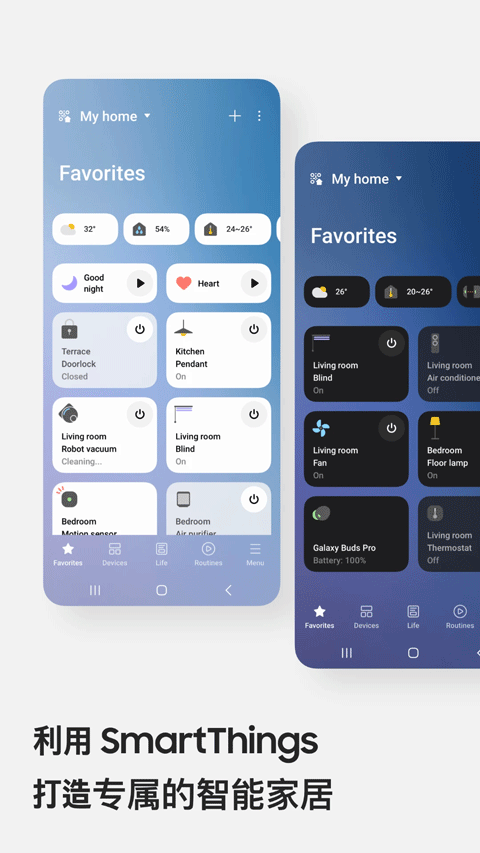
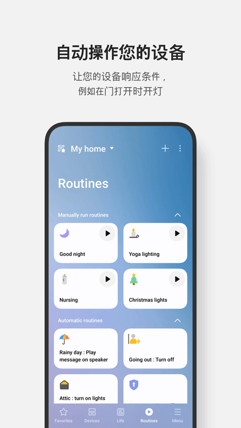

SmartThings 上手一周，说说三星把智能家居这件事做对了什么
从 Home Assistant 切到 SmartThings 纯粹是偷懒的决定，但用了一周发现，省心背后是三星在协议、生态和产品设计上的默默做功。
为什么我会装它
说来惭愧，我接触 SmartThings 纯粹是因为懒。
之前一直在 Home Assistant 上折腾，Zigbee 网关、MQTT Broker、Node-RED 自动化流，家里的智能家居被我拼成了一个 Frankenstein——能用，但每次改个触发条件都要翻半小时论坛，升级还偶尔把自动化搞挂。直到朋友扔来一台三星 Hub V3，说"试试这个，开箱跑通 Matter"，我就抱着"反正闲置也是闲置"的心态装了。
SmartThings 是三星的智能家居平台，主打开箱即用。SmartThings官网上对 Matter 协议的支持列表和各款 Hub 的规格写得挺细，我当初就是冲这个才决定试试的。定位上跟 Home Assistant 完全是两条路——后者是极客的乐高，前者是面向普通家庭的成品家具。但我原本以为成品家具意味着功能阉割，没想到一周用下来，好几个地方让我觉得三星其实藏了不少巧思。
初印象：五分钟跑通第一台设备
从SmartThings下载拿好 App 安装包，创建三星账号、把 Hub V3 插电——这三件事加起来不到五分钟。Hub 通过 Matter over WiFi 自动接入网络，手机 App 弹出"发现了 Zigbee 设备"，我点了一下"全部添加"，客厅里那五个 Yeelight 筒灯就自动进了设备列表。
说实话，我之前对"自动发现"这个词是怀疑的——Home Assistant 的自动发现经常是个半成品，扫到了也不一定能正确配好。但 SmartThings 这里确实省心：设备进来之后，默认按 Room 分组好了，"客厅-筒灯 x5""主卧-吸顶灯 x2"，连我当初在 Yeelight App 里给灯起的中文名都同步过来了。

App 的首页就是 Favorites 卡片横向滚动，每个卡片点一下直接操作——灯一键开、空调一键切 26 度、门锁看一下状态。不像 Home Assistant 那种仪表盘，得自己配置卡片布局。对我这种"不想做前端"的人来说，这一点是真香。
实际用下来的几个核心体验
第一点：Routines 自动化，"好用"比"灵活"重要
SmartThings 的自动化叫 Routines，用 IF-THEN 的自然语言来写。比如我配的第一个场景：
IF：所有人都离开了家 AND 灯光还亮着THEN：关所有灯 + 空调待机
写的时候完全不用写代码。点"创建 Routine"，选触发条件是 Geofencing 的"所有人离开"，再选动作组里加灯光、空调——整个过程是点菜单，不是写 YAML。

我原本担心"自然语言编辑"会限制高级玩法，比如能不能嵌套条件、能不能用变量。结果 SmartThings 把常用组合都内置了：Geofencing + 状态判断、时间触发 + 多设备联动、传感器触发 + 通知推送。日常家用这已经覆盖了 95% 的场景。剩下那 5%，说实话我在 Home Assistant 上也很少用到。
最让我意外的是 Routines 的成员感知。家里四口人，每个人的手机都作为独立的 Geofencing 源。我可以写"孩子到家了 → 推通知给妈妈 + 开玄关灯"，也可以写"所有人都离开 → 关所有灯"。Home Assistant 里要实现这个得装 Node-RED 写一串 flow，SmartThings 里就是点两下。
第二点：Hub 的选择让人头大，但选对了很关键
用了三天我才搞明白，SmartThings 的 Hub 不是只有一个型号。
我拿到手的是 V3，支持 Zigbee、Z-Wave、Thread、BLE 和 Matter 全协议。但朋友家里有一台三星 QN90 电视，2022 年后的型号内置 SmartThings Hub——不过内置 Hub 只支持 WiFi/Matter WiFi 设备，不含 Zigbee/Z-Wave 射频。这就意味着如果朋友只买了三星自家的 SmartThings 灯泡，电视就能搞定；但他买了 Aqara 的门窗传感器（Zigbee），就得额外接 V3 做主力。
这个 Hub 选型的问题我当初没太在意，直到朋友说他电视待机之后 Hub 也停了，传感器失联半小时才被发现。后来去SmartThings文档翻了一下，官方确实有明确说明内置 Hub 不含 Zigbee/Z-Wave 射频、TV 关机 Hub 就停这两个限制，只是我当初没仔细看。所以如果你家里有 Zigbee 或 Z-Wave 设备，外接 Hub 必须是主力，电视内置 Hub 只能算辅助节点——电视一关机，Hub 就跟着停。
V3 还有个我挺在意的点：固件自动静默推送。Home Assistant 的 Zigbee 网关固件升级我都得手动盯着，生怕中途断了电变成砖。SmartThings 这里是后台自动更，用户完全不用管。这对普通家庭用户来说是大优点，但对喜欢折腾固件的极客可能就觉得不够透明。
第三点：家庭成员管理，做得比我预期的细
SmartThings 一个家庭（Location）最多邀请 20 个成员，每个人用自己的三星账号登录。
管理员能改设备配置、创建 Routines、管理成员，普通成员只能看状态、触发手动场景、收自己的通知。权限模型不复杂，但够日常用。我老婆不想让我改她卧室里灯的自动化——直接在成员管理里把她设成普通成员就行，她那边能看、能点，但改不了。
另外 Routines 可以生成链接或 QR 码分享。我同事想试试我家的"晚上 8 点自动调暗儿童房灯"的场景，我直接生成链接发给他，他打开之后 SmartThings 自动识别——如果他有对应设备就能直接用，没有就提示"不支持该动作"但仍然能保存并替换自己的设备。这种"分享即用、不纠结设备型号"的设计，Home Assistant 社区里虽然也有人做，但 SmartThings 把它做成了平台级功能，这点确实方便。
适合谁，不适合谁
用了一周，我的结论很直接：
适合的人：家里有三星电视或三星家电的用户，想把智能家居从"拼起来能用"变成"省心"的普通家庭用户，以及不想折腾代码但想要自动化体验的上班族。Matter 协议支持让你以后换其他品牌设备也不用怕被锁死。
不太适合的人：喜欢用 Node-RED 做复杂自动化的极客，有大量自定义 Zigbee 设备的玩家，以及需要完全控制固件和底层协议的 DIY 党。SmartThings 把很多高级能力藏起来了，不是做不到，是默认不开放。
最后说一句，我目前还在双轨并行——Home Assistant 留着做一些 SmartThings 做不到的事，SmartThings 管日常大部分场景。谁也没完全取代谁。但如果你问我现在推荐新手入坑智能家居选什么，我大概率会让他们先试试 SmartThings，而不是直接啃 Home Assistant 的文档。
关于 SmartThings 的兼容性对照表、Hub 型号差异和常用 Routines 示例，我整理的资料在三个代码仓库里都有备份——GitHub 是主仓库，国内访问慢的话 Gitee 和 GitCode 都同步了，搜 SmartThings 就能找到。